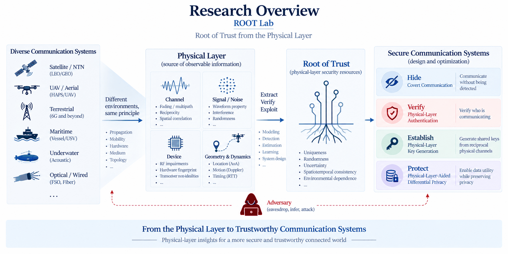
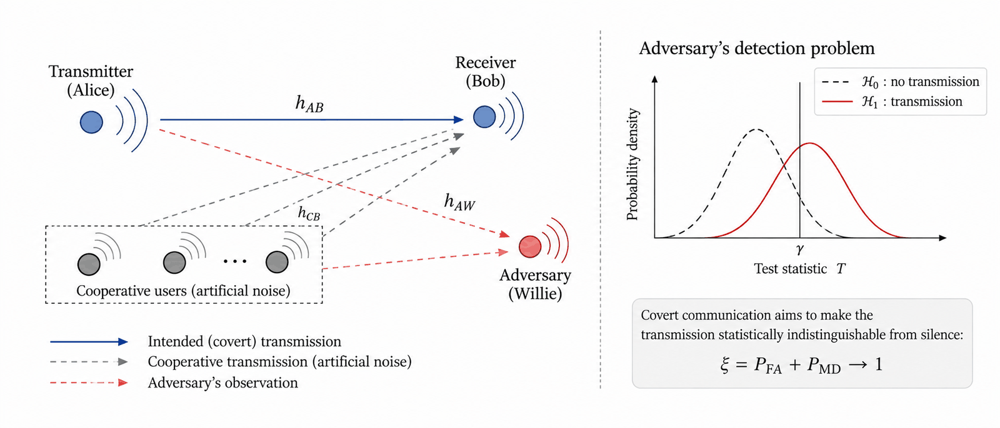
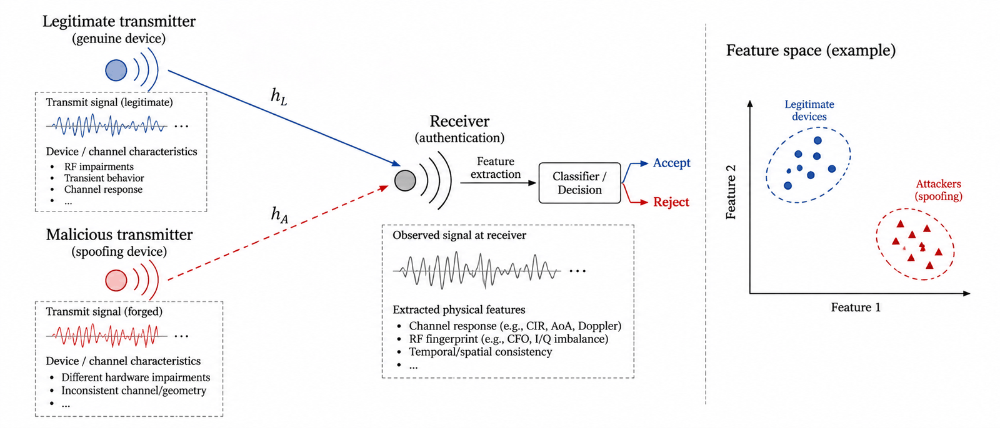
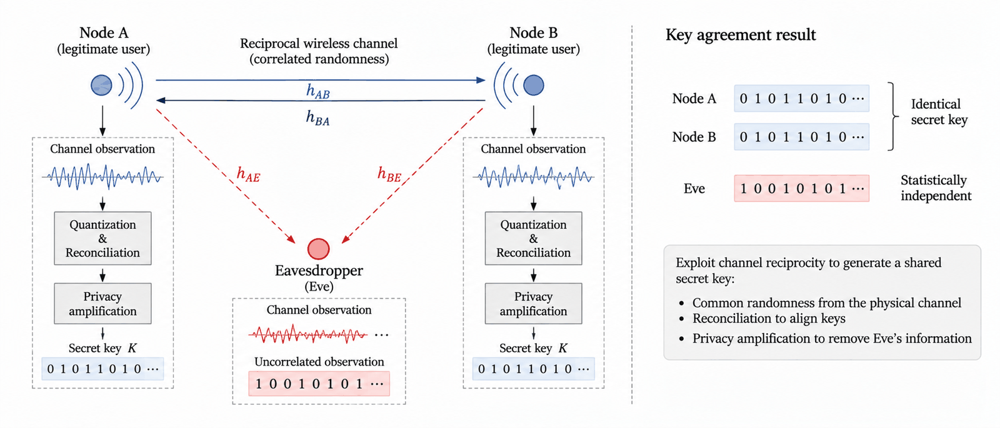
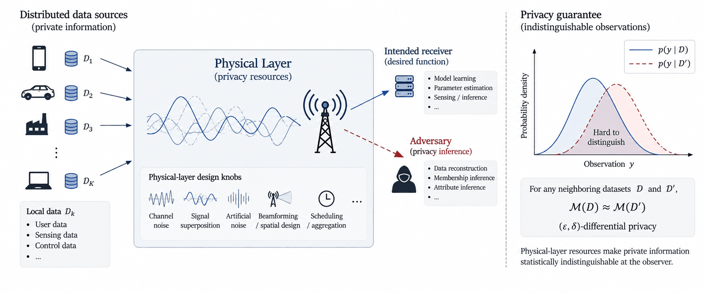

Research
What we study, and why we start at the physical layer
Overview
Most security mechanisms build trust above the physical layer, through keys, certificates, and protocols. We ask whether trust can begin one layer below. The physical layer carries observable information about the channel, the signal and its noise, the transmitting device, and the geometry and motion of the communicating nodes. We study how these physical observations can be extracted, verified, and used as a root of trust.
From that root of trust we pursue four security objectives. Can a transmission be hidden altogether? Can the receiver tell who really sent a packet? Can two radios turn their shared observations into a key that nobody else holds? Can the noise and mixing of signals in the air keep a user’s data private? Each objective ends up as a question about how the communication system itself should be designed.

Covert Communication
Encryption hides what you say. Covert communication hides that you said anything at all. Imagine a room where someone is listening for any sound. The goal is to talk to a friend so quietly, and so naturally, that the listener cannot tell your voice from the background noise, while your friend still hears every word.
In a wireless network the background noise is real. Other users, interference, and the fact that the eavesdropper does not know who is active all help to hide a transmission. We study how much can be sent this way, and how to choose transmit power, helping users, and relay positions so that the transmission stays hidden but still useful.

Physical-Layer Authentication
When a message arrives, how do you know who really sent it? A password or a certificate proves that someone holds a secret. It does not prove that the radio in front of you is the one it claims to be. Physical-layer authentication looks at the signal itself, the way you recognize a friend by their voice and not only by what they say.
Every radio has small hardware imperfections, every path through the air leaves its own pattern, and a moving transmitter must show the motion that matches its claimed position. We collect these clues from the received signal and decide, with a simple accept-or-reject test, whether the sender is genuine.

Physical-Layer Key Generation
Two people who want to share a secret usually have to send it somehow, and anything sent can be overheard. Physical-layer key generation avoids sending the secret at all. The wireless channel between two radios changes randomly over time, and both radios see almost the same changes, while an eavesdropper standing somewhere else sees different ones. The two sides derive the same key from these shared observations instead of transmitting the key itself. What they do exchange in public carries no information about the key.
Both sides measure the channel, turn the measurement into bits, and correct the few bits that disagree. How many key bits per second this gives depends on how fast the channel changes, so mobility, how often the channel is probed, and surfaces that stir the channel on purpose are all part of the design.

Physical-Layer-Aided Differential Privacy
Many devices, such as phones or sensors, can train a shared model by sending small updates to a server. The problem is that an update can reveal something about the person who sent it. Differential privacy is the standard way to limit this. Enough noise is added that no single person’s data can be picked out of the result.
A wireless system has several physical resources that can help make results hard to tell apart in this way: channel noise, the superposition of signals that are sent at the same time, artificial noise, beamforming, and the way power and time slots are allocated. We design these resources together with the communication or learning task, so that a formal privacy guarantee holds without giving up more accuracy than necessary.
